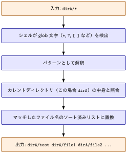

Problem
カレントディレクトリ以下に dirA/ というサブディレクトリが以下のような構成で存在するとする
% tree dirA -a
dirA
├── .config
├── .test
│ ├── .test2.txt
│ └── test.txt
└── test
├── .test2.txt
└── test.txt
3 directories, 5 filesこの dirA/ を dirB/ にまるっとコピーしようと思い，アーカイブモードoptionを利用して
% mkdir dirB
% cp -a dirA/* dirBと実行したところ
% tree -a dirB
dirB
└── test
├── .test2.txt
└── test.txt
2 directories, 2 filesとなり，一部の隠しファイル及び隠しディレクトリがコピーされなかった．
Glob Matchingの挙動
| シェル | デフォルト挙動を制御するオプション | 有効にすると隠しファイルもマッチ |
|---|---|---|
| bash | dotglob（デフォルトoff） |
shopt -s dotglob |
| zsh | GLOB_DOTS（デフォルトoff） |
setopt GLOB_DOTS または glob修飾子 (D) |
*，?などのワイルドカードを使ったファイルパスは glob パターン と呼ばれます．GNU Bash Manual, 3.5.8 Filename Expansionにおいて以下のように説明されています．
Bash scans each word for the characters ‘*’, ‘?’, and ‘[’. If one of these characters appears, and is not quoted, then the word is regarded as a pattern, and replaced with a sorted list of filenames matching the pattern
*，?などのワイルドカードを用いた文字列はパターンとみなされ，そのパターンにマッチするファイルネームリストとして展開される(原文ではreplaced with a sorted list) = globbing 処理がなされるということです．
例 1 echo dirA/* の処理の流れ

- コマンド（
cpやechoなど）が実行される前にシェル自身が行う cpやechoコマンド自身はglob pattern自体は知らず，シェルによってすでに展開済みの具体的なファイル名リストを受け取っている
隠しファイルとGlobbing in Bash
GNU Bash Manual, 3.5.8 Filename Expansionにおいて
When a pattern is used for filename expansion, the character ‘.’ at the start of a filename or immediately following a slash must be matched explicitly, unless the shell option dotglob is set.
dotglob を有効にしない限り，明示的に指定しないと dirA/.config などの隠しファイルや隠しディレクトリはglobbingされないと明言されています．
例 2 dotglob有効化
$ echo dirA/*
dirA/testdirA直下の.で始まるものは除外
$ shopt -s dotglob # 有効化
$ echo dirA/*
dirA/.config dirA/.test dirA/test
$ shopt -u dotglob # 無効化.,..というエントリは有効化してもマッチングしない
隠しファイルとGlobbing in Zsh
The Z Shell Manual > Expansion において
Other characters which must match exactly are initial dots in filenames (unless the GLOB_DOTS option is set)
と記載があるように，Bash と同様に明示的に指定しないと dirA/.config などの隠しファイルや隠しディレクトリはglobbingされません．
setopt GLOB_DOTS の設定
% setopt GLOB_DOTS # 有効化
% unsetopt GLOB_DOTS # 無効化と GLOB_DOTS を切り替えることができます．現在の設定状態を確認する方法は
% setopt | grep -i globdots
globdots有効化したあとでは，. から始まるファイルやディレクトリも以下のようにマッチします
% echo dirA/*
dirA/.config dirA/.test dirA/test(D) qualifierの活用
The Z Shell Manual > Expansion を読んでみると
D: sets the GLOB_DOTS option for the current pattern
との記載があります．
(D) は zsh 固有の glob qualifier で，setopt GLOB_DOTS のようにシェル全体のオプションを変更することなく，そのパターン1回限定で隠しファイルを対象に含めることができます
% echo dirA/*(D) # (D)修飾子でこのパターンだけ隠しファイルも対象に
dirA/.config dirA/.test dirA/testsetopt GLOB_DOTS / unsetopt GLOB_DOTS のように前後でオプションを切り替える必要がない点がメリットです．cp -a と組み合わせるなら次のように書けます．
cp -a dirA/*(D) dirBThen,
% tree -a dirB
dirB
├── .config
├── .test
│ ├── .test2.txt
│ └── test.txt
└── test
├── .test2.txt
└── test.txt
3 directories, 5 filesGlobbingを用いない解決策
Solution 1
Bash, ZshそれぞれのGlobbing挙動について上記では説明しましたが，もともとやりたかったことはdirA の中身をまるっと，dirB へコピーするです
この場合，
cp -a dirA/. dirBで十分です．「.」 は「そのディレクトリ自身」を指す特殊なパスでglob特殊文字ではないので，ドットファイルが除外されるなどの副作用は発生しません．
Solution 2
rsync コマンドを用いて
rsync -az dirA/ dirBdirA の中身をまるっと dirB へ動悸されることができます．
dirA/ でなく dirA と指定してしまうと，dirA というディレクトリ自体が dirB の中にコピーされてしまいます．
% rsync -a dirA dirB
% tree -a dirB
dirB
└── dirA
├── .config
├── .test
│ ├── .test2.txt
│ └── test.txt
└── test
├── .test2.txt
└── test.txtGlossaries
glossary:
- def: glob
description: |
シェルにおいて `*` や `?` などのワイルドカード文字を使ってファイル名のパターンを
表現し，そのパターンにマッチするファイル・ディレクトリの一覧に展開する機能．
例えば `*.txt` はカレントディレクトリ内の拡張子が `.txt` であるすべてのファイルに
展開される．
- def: qualifier（修飾子）
description: |
zsh の glob 展開において，パターンの末尾に丸カッコ `(...)` で付与する修飾子．
展開結果をファイルの種類（ディレクトリ・シンボリックリンク等），更新日時，
サイズなどの条件でさらに絞り込んだり，ソート順を指定したりするために使う．
例えば `*(.)` は通常ファイルのみに，`*(/)` はディレクトリのみに絞り込む．
- def: rsync
description: |
ローカル・リモート間でファイルやディレクトリを効率的に同期するコマンド．
差分ファイルのみを転送するため大量のデータコピーより高速．
ネットワーク越しの通信でも，転送時に圧縮(-z)の設定が可能．